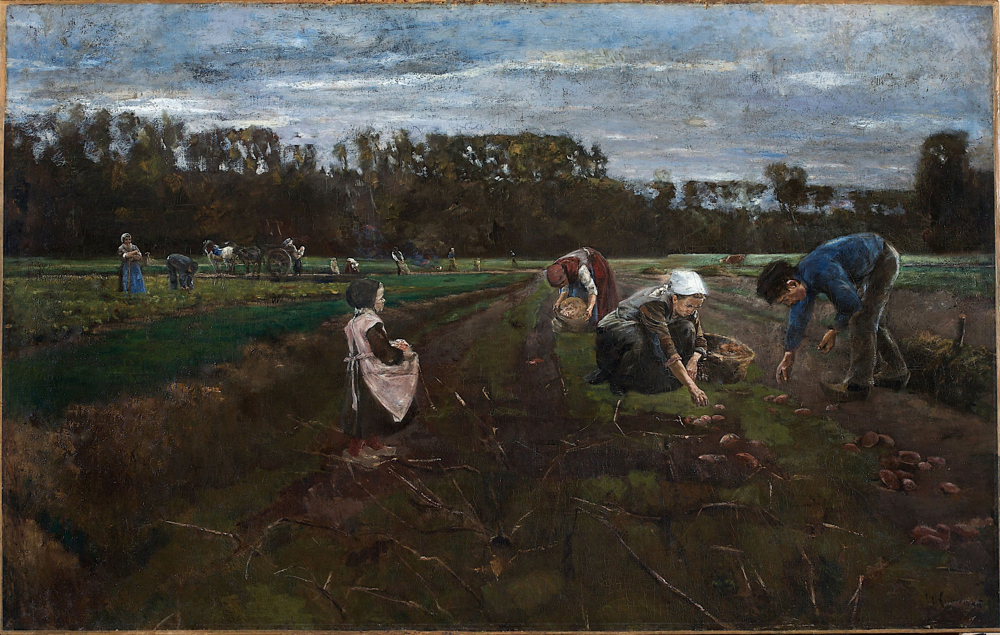

**Макс Либерман**
__Die Kartoffelernte__ (Собирание картофеля), 1875

Холст, масло, 108,5 x 172 см
Музей Кунстпаласт, Дюссельдорф.
[...]; 1884 г. коллекция Йоханнеса Шперля; коллекция Пауля Кассирера, Берлин; 1913 Общество пополнения коллекций Муниципального художественного музея Дюссельдорфа; в 1938 г. передан в обмен художественному магазину Йоханнеса Хинрихсена, Берлин/Альтаусзе, Австрия; 12.9.1953 вновь приобретён Йоханнесом Хинрихсеном, Альтаусзе. Это раннее крупное произведение Либермана относится к доимпрессионистской фазе его творчества. После окончания обучения в Веймаре художник с 1873 по 1878 год жил в Париже, где под влиянием Барбизонской школы и особенно Жана Франсуа Милле (1814-1875) занимался изображением рабочего сельского населения. В тонком цвете и свободной манере Либерман запечатлел низко склонившихся над широким полем сборщиков картофеля. Хотя художник подробно подготовил картину в нескольких отдельных этюдах и композиционном наброске, он неоднократно пересматривал выполненную работу и до сих пор не показывал её ни на одной выставке. Когда Либерманн переехал из Мюнхена в Берлин в 1884 году, он подарил "Урожай картофеля" своему другу художнику Йоханнесу Шперлю. Вероятно, Либерману было бы трудно найти покупателя на картину, поскольку его реалистичное изображение кропотливой уборочной работы на фоне неокрашенных пейзажей в Германии изначально не встретило особой симпатии.
Источник: https://emuseum.duesseldorf.de/view/objects/asitem/items$0040:141733